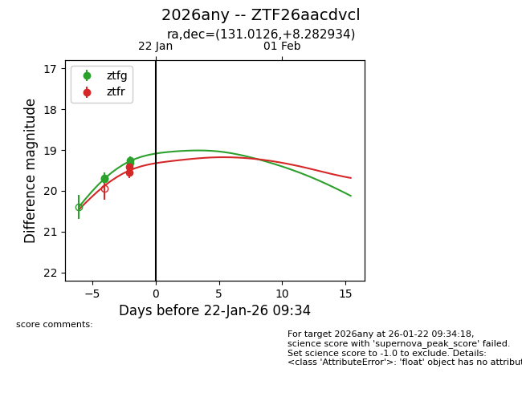
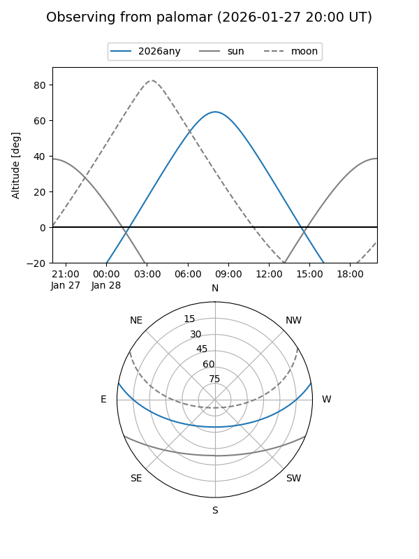
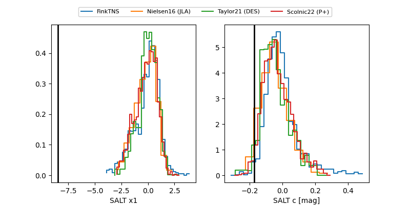

2026any
Target 2026any at 2026-01-25 07:46
Aliases and brokers:
FINK: link
Lasair: link
ALeRCE: link
TNS: link
YSE: link
alt names
ZTF26aacdvcl (ztf,fink_ztf)
2026any (tns,yse)
Coordinates:
equatorial (ra, dec) = 131.0126,+8.28293
equatorial (HMS+DMS) = 08:44:03.01,+08:16:58.56
galactic (l, b) = (218.4760,+28.76586)
Flags:
Photometry:
last ztfg=18.78, ztfr=19.54
6 ztfg, 2 ztfr detections
Lightcurve

Visibility


Additional plots
